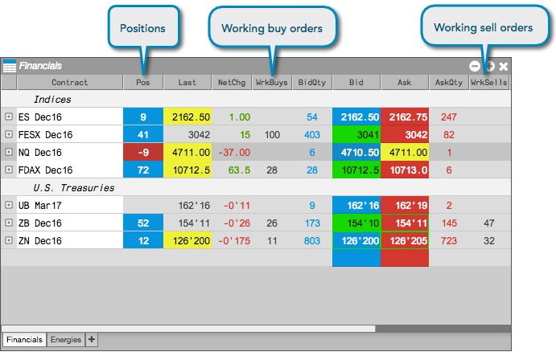
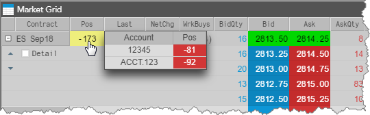
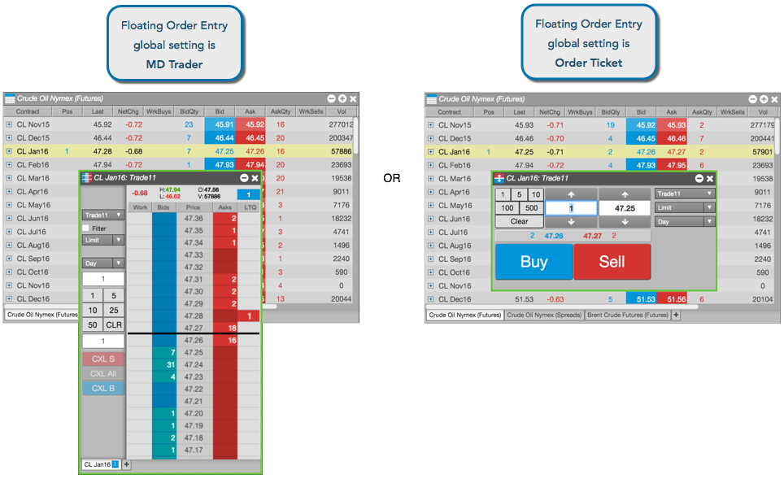
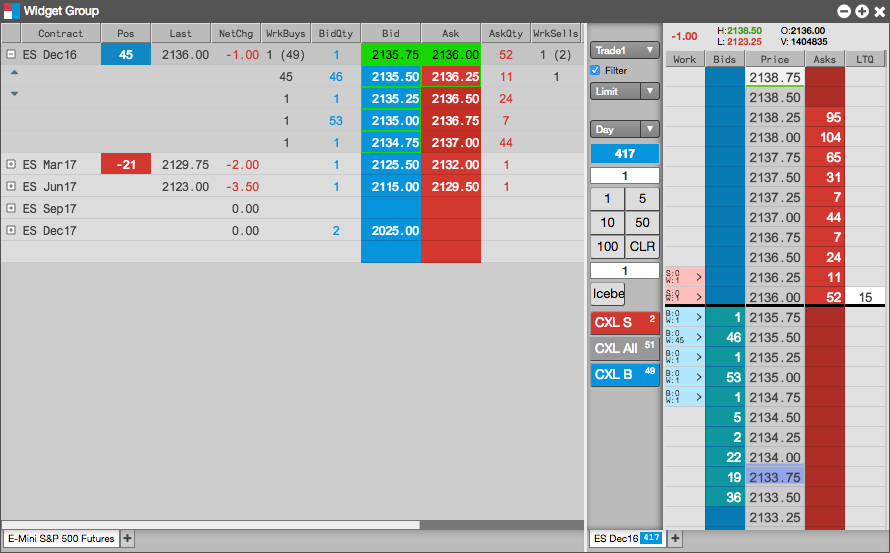
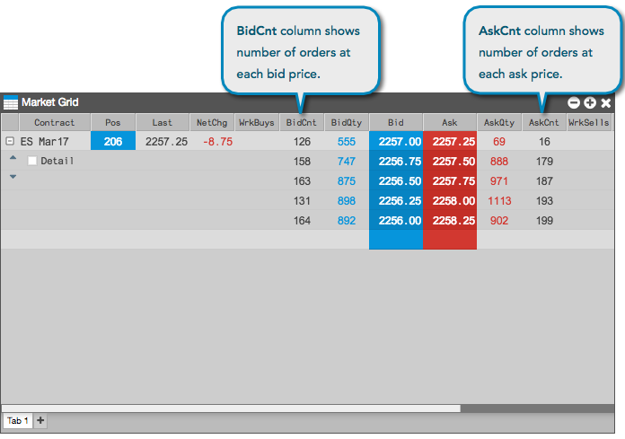

You can trade from the Market Grid by opening an Order Ticket or MD Trader widget for the instrument you wish to trade. You can open a widget for a specific contract as a Floating Order Entry widget, linked widget, or widget group. As you trade, your positions and working orders are displayed in the Market Grid.

You can also middle-click the value in the Pos column to display your positions by account.

When you click a cell in the following columns for an instrument, a floating order entry widget opens pre-populated with the selected value so you can quickly enter an order:
- Pos (open position)
- Last
- LastQty
- Bid
- BidQty
- Ask
- AskQty
Based on the Preferences, either an MD Trader or Order Ticket opens.

From a Market Grid, you can quickly launch a linked MD Trader or Order Ticket. The linked widget can be identified by a yellow border. The linked widget remains open unless you close it, and you can quickly switch instruments in the linked widget by clicking on any instrument in the Market Grid. This allow you to trade one instrument and then quickly trade a different
instrument.

Widget Groups
You can create a widget group with the Market Grid and an order entry widget to trade with both as a single widget. As you submit orders for an instrument using the order entry widget, you can view the market in the Market Grid. As you change instruments in the Market Grid, they automatically appear in the order entry widget in the group.

Floating Order Book
Users can cancel or modify working orders for any instrument in the Market Grid by opening a Floating Order Book. The Floating Order Book also allows you manage an order by attaching an Order Management Algo (OMA) to the order.

Number of Orders (Headcount)
The Market Grid provides optional columns that show the number of orders (i.e., headcount) that comprises the total bid and ask quantity at each price in the market. By viewing the number of orders, you can gain insight to the makeup of the bid or ask quantity displayed at that price level.
Some exchanges provide the number of orders in their market data feeds. If an exchange does not provide this data, TT calculates the number of orders based on the detailed depth provided by the exchange. If an exchange provides neither the number of orders or detailed depth, the optional columns for displaying the number of orders in the Market Grid will be blank.
Number of orders display
The number of orders at a price level for bids and asks are displayed in the optional BidCnt and AskCnt columns. These columns are shown using the Set Market Grid columns option in the Market Grid widget settings.

{% include piq-mg.html %}